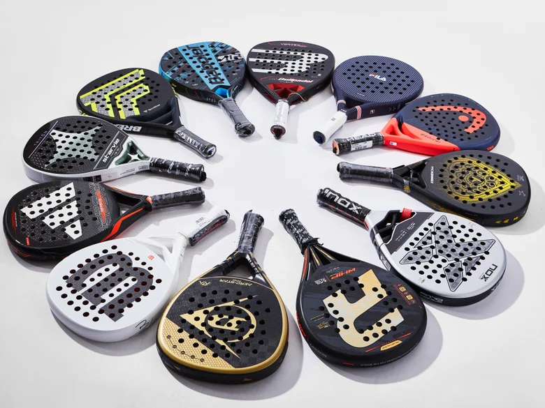
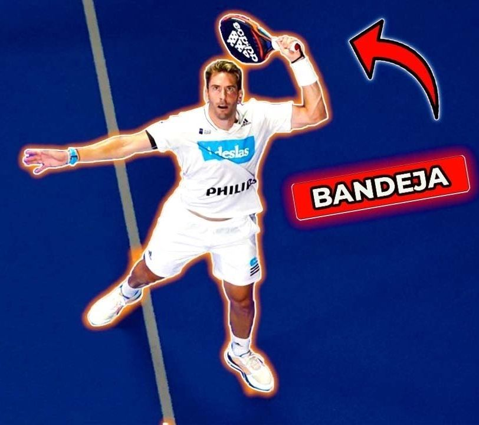
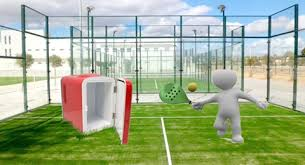

Comprar una pala

Seguro alguna vez te has preguntado qué tener en cuenta para elegir tu pala ideal. Entras en la web, mil modelos, cientos de marcas, balnce alto o bajo, dureza blanda o dura,... ¿Punto dulce? ¿Esto es una pastelería? Tranquilo, aquí te dejaremos claro qué tener en cuenta, qué es cada cosa y por qué vas a seguir dejandola en la red.
Empecemos con que puntos son importantes a la hora de elegir tu próxima arma en el 20x10:
- Peso: El peso de la pala influye directamente en la manejabilidad y potencia. Palas más ligeras son más fáciles de manejar, ideales para jugadores principiantes o aquellos que buscan rapidez. Palas más pesadas ofrecen mayor potencia en los golpes, pero requieren más fuerza y técnica.
- Balance: El balance se refiere a la distribución del peso en la pala. U n balance bajo (hacia el mango) ofrece mayor control y maniobrabilidad mientras que un balance alto (hacia la cabeza) proporciona más potencia. Un balance alto sumando a un peso alto hace una pala muy ofensiva pero puede propiciar problemas de codo (epicondilitis) a la larga si tu musculatura no está adeacuada a ello. En resumen: el balance indica cuanto de cabezona es tu pala.
- Forma: Existen principalmente 3 formas de pala: redonda (balance bajo, control alto, buena manejabilidad), de lágrima (una forma mixta entre control y potencía, lo mejor de los dos mundos, sin destacar en una faceta ni fallar en la otra) y diamente (balance alto, potencia alta, para jugadores que buscan golpes potentes dejando de lado la manejabilidad). La forma de la pala va altamente ligada al balance de la misma.
- Punto dulce: Es la zona de la pala donde suena bien el golpe, donde sientes entrar la bola y dices "Que bien le he dado". Es decir, donde por desgracia nunca le damos. Normalmente a mayor dureza menor es el punto dulce de la pala.
- Dureza: La dureza del núcleo de la pala afecta a la sensación de golpeo y al control. Núcleos más blandos ofrecen mayor absorción de impactos y control, ideales para jugadores que buscan precisión. Núcleos más duros proporcionan mayor potencia y velocidad en los golpes, pero pueden ser menos tolerantes a fallos humanos. Entonces, "Si tengo una pala blanda no puedo pegarle?" Para nada, simeplemente necesitarás un esfuerzo meramente mayor, pero todo depende de tu fuerza, altura, potencia,...
- Rugoso: Como su nombre indica significa si la superficie de la pala es lisa o tiene algún tipo de caricatura que la hace rugosa. Puede ser de tipo arenoso, con relieve, alguno dibujo,... Esto basicamente afecta a la capacidad para darle efecto a la bola en golpes cortados o liftados, pero no es algo imprescindible, ya que los porpios agujeros de la pala te ayudan a ello.
Existen numerosas webs y tiendas especializadas donde ya te ponen las características técnicas de la pala, pero estas no son otras que las que da la propia marca y vendedor. Si les preguntas a ellos siempre tienen la pala más potente, para los jugadores más profesionales, con el mejor control del mercado y el mayor punto dulce jamás visto.
Pero recuerda, cada uno es de su amdre y de su padre. Acercate a tu club más cercano que tendrán mil y una palas para dejarte probar, juega y decide la que más se adapte a ti.
Conceptos básicos

Como en todo deporte, existen ciertos "técnicismos" que es importante conocer para entender mejor el juego o para no quedarte mirando a tu compañero con cara de "¿Qué me está diciendo este loco de la bandeja? ¿Ya está pensando en el bar?"
Vamos adelante con qué debes conocer si o si para ser el próximo número 1 tanto dentro como fuera de la pista:
- Saque: El saque es el primer golpe que inicia un punto. Lo ejecuta un jugador desde detrás de la línea de fondo y debe ir en sentido cruzado. Relizandose con un bote y golpeando la bola siempre por debajo de tu cadera.
- Resto: Es el segundo golpe de cada punto (si es que le damos). Se refiere a la devolución del saque por aprte del jugador del equipo rival. La única norma referente al resto es que en cada punto debe alternarse el jugador de la pareja.
- Globo: Los profesionales le llaman "El golpe más importante del padel". El globo es un golpe hacia arriba, alto, bombeado y que pretende sobrepasar a nuestro rival por encima de la cabeza para que tenga que correr hacia atrás. Hay que ser consecuente con él, ya que como te quede un globo corto te la juegas a que te rematen la siguiente y se acabe el punto, pero si te sale bien ganarás por completo la iniciativa del punto.
- Remate: Es el golpe que todos decimos que somos buenisimos a pesar de darle a 1 de cada 10. Es un golpe agresivo, rápido, fuerte y normalmente sin efecto, aunque también puede ser liftado. Es un golpe para intentar ganar el punto y se realiza cuando tus rivales no ha tirado un buen globo (o cuando tu crees que tus rivales no han tirado un buen globo).
- Bandeja: Este golpe es único en el padel, no lo comparten otros deportes. La diferencia principal entre el remate y la bandeja no es otro que el armado y la intención. También es un golpe como respuesta a un globo, pero mientras que el reamte se impacta la bola justo en un vertical, la bandeja se impacta desde un lado de tu cuerpo, buscando simplemente un golpe que llegue a fondo de pista y no te haga perder la iniciativa del punto sin arriesgarte a fallar.
- Volea: ¿Y si estoy pegadito a al red y no me tiran un globo? Volea. Golpe agresivo, bajo, con o sin efecto, que busca que los rivales estén pegados al cristal de fondo defendiendo sin poder atacarte o ganar la iniciativa. Generalmente se busca que bote poco dandole un efecto cortado o dandole muy fuerte y rápido para sorprender, aunque esto puede ser un arma de doble filo.
- Vibora: La bandeja agresiva. El armado es el mismo pero el impacto a la bola se hace lateralmente, buscando un giro de la misma hacia el lateral. Puedo incluso imprimirse más fuerza al impacto, pero no se busca que la bola vuelva a tu campo o flote, es mejor que se enrede en la esquina con ese giro lateral que le has dado. Como muchos dicen: "ay que impactar a la bola a las 3 en punto".
- Remate x3: Es un remate liftado, en dirección al segundo crital de cada esquina, que choque alto en dicho cristal, para que la bola rebote y salga por encima de la verja lateral, esta que mide 3 metros de alto. De ahí el nombre de "x3". Es un golpe complejo, con gran dificultad y que si la bola no llega a salir va a generar un golpe facil y agresivo apra tus rivales. Pero... ¿Y si si que sale? ¿Y si soy el próximo nuúmero 1 del mundo? Pues dale, pegale x3 que esa la ganas.
- Remate x4: Igual que el anterior consistía en sacarla por encima de la verja de los 3 metros, esto se dice que salga por encima de los 4 metros, la pared del fondo de pista. Esta no busca rebotar en ningún cristal sino en el suelo unicamente. Un bote alto con un golpe de muñeca, como si buscases que la pelota toque el techo.
Existen muchos más conceptos: chiquita, dejada, planazo, chancletazo, volea perrona,... y seguro que si le preguntas a Paco, tu amigo que lleva jugando 15 años, te dice muchos más. pero con estos tienes más que suficiente para salir ahí y jugar tu primer partido.
La nevera

La tan odiada y tan amada nevera. Y no, no hablamos de ese lugar mágico donde se guardan las cervezas bien frías para después de un buen partido, sino de esa situación tan temida por todos los jugadores de pádel.
La nevera es la táctica más usada por los jugadores (tanto amateurs como profesionales) para desquiciar a sus rivales y conseguir ganar ese partidito del finde y así poder vacilar por el grupo de Whatsapp de tus colegas durante toda la semana. Pero, ¿qué es la nevera? ¿Cómo puedo evitarla? ¿Cómo salir de este lugar tan frio?
La nevera consiste en enfocar la mayoría de los golpes hacia un único jugador, manteniendo al otro inactivo y sin apenas participación en el partido. Esta situación puede resultar frustrante, ya que el jugador que no recibe juego se siente incapaz de ayudar a su compañero. Es facilmente identificable porque vas a escuchar a tu rival gritar cosas como "¡ES QUE NO ME TIRAN UNA!" o a tu cmpañero decirte "¡TODAS AL MALO!". Seamos realistas, nadie quiere recibir la nevera, y no es algo que debas hacer en tus aprtidas con amigos o en las pachangas de los findes. Queda feo, como una falta de etiqueta ya que todos hemos venido al 20x10 pagando un dinero e invirtiendo nuestro tiempo para pasar un buen rato. Ahora si, la cosa cambia si hablamos de competición. ¿Estas en un torneo? ¿Tu equipo necesita que ganas tu partido para no descender a última categoría de liga regional? Adelante. En el amor y la guerra todo vale.
Pero vayamos a lo que te interesa. ¿Cómo puedo evitarla? ¿Como salgo de ella?
- Buscar que la pelota regrese de forma cómoda: Cuando tu compañero recibe todo el juego, su carga física aumenta considerablemente. Tu objetivo es ayudarle a manejar esa carga, haciendo que las devoluciones de los rivales sean lo más cómodas posible para él. El jugador activo debe procurar devolver bolas con control, minimizando los errores, mientras que el jugador en la nevera debe estar preparado para intervenir tan pronto como surja una oportunidad.
- Equilibrar el nivel entre los dos jugadores: Si hay una clara diferencia de nivel entre los dos miembros de la pareja, los rivales se centrarán en explotar esa diferencia. Por ello, es fundamental que ambos jugadores se esfuercen por reducir esta disparidad. Esto puede implicar que el jugador más fuerte ayude al otro a cubrir áreas de la pista, o que el jugador en la nevera mantenga un nivel de juego alto en las pocas oportunidades que reciba.
- Cambiar la dinámica con golpes en paralelo: En el pádel, lo más habitual es jugar en cruzado, ya que ofrece ventajas tácticas claras (como el hecho de que la red es más baja en el centro y se genera confusión entre los rivales). Sin embargo, cuando un jugador se encuentra en la nevera, es crucial modificar esta rutina. El jugador activo puede intentar jugar en paralelo, lo que obliga a los rivales a modificar su patrón de juego. Este cambio de ángulo puede desconcertar al equipo contrario, reduciendo su capacidad para mantener la nevera y ofreciendo nuevas oportunidades para que el jugador en la nevera entre en acción.
- Evitar el uso de la estrategia australiana: El sistema australiano, donde cada jugador se queda en su lado de la pista durante todo el partido, facilita que los rivales se enfoquen en un único objetivo. Si no juegas en australiana, cambias constantemente de posición, lo que obliga a los rivales a recalibrar su estrategia, dificultando que mantengan la nevera.